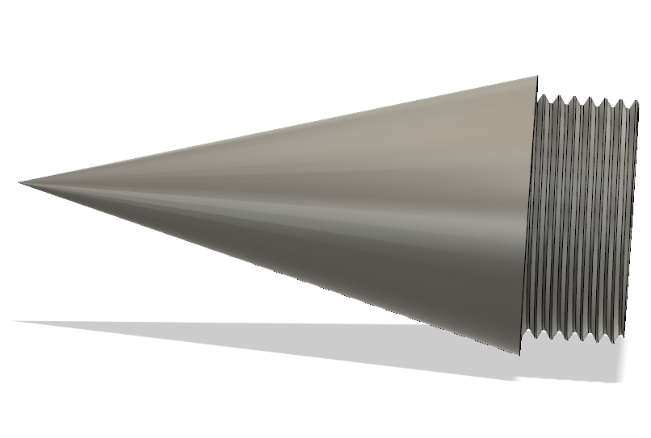
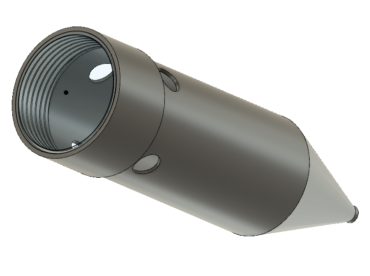
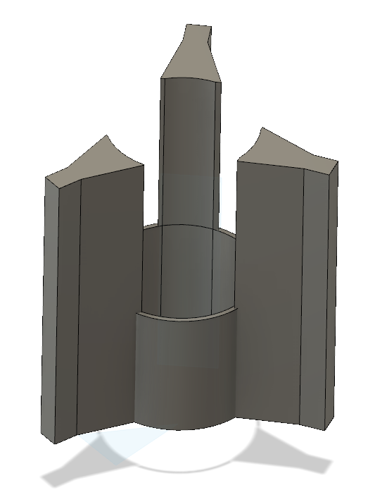
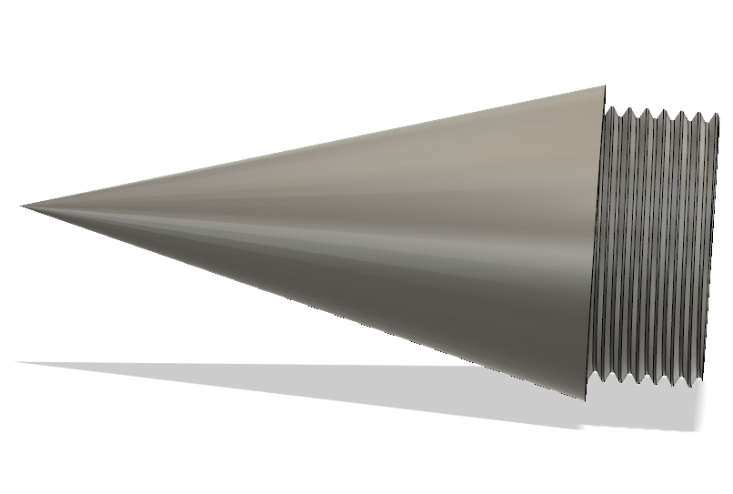
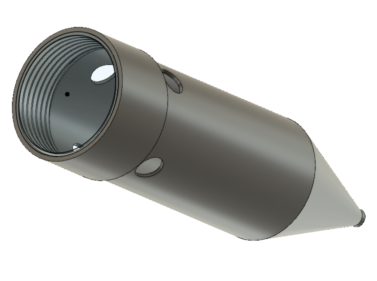
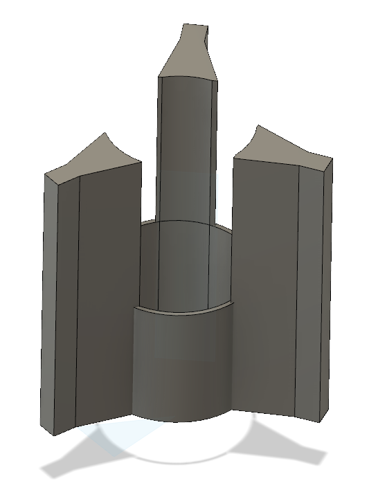
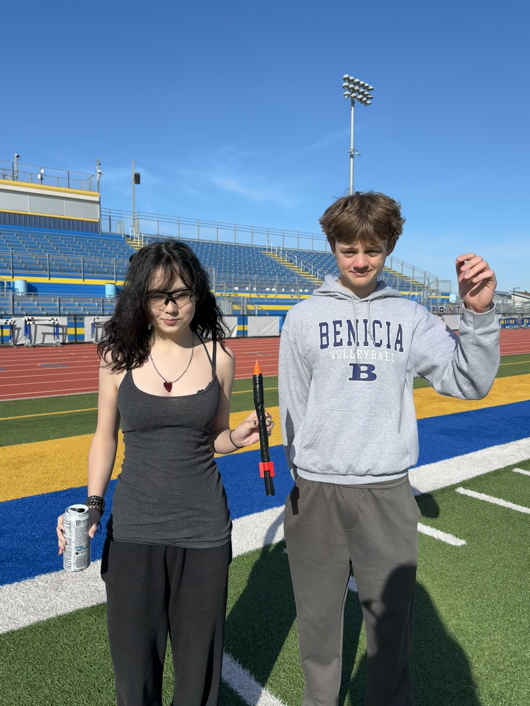

Description
This project was determined on designing a rocket that could launch into the air. The goal was to make it more aerodynamic and efficient so that it could launch higher than the paper rockets previously designed out of paper and tape. To do this, we read on some research in Whitebox Learning that taught us how different factors effect the flight of the rocket. These forces include drag (air resistance), lift (stability), thrust (lift-off), and weight (mass + gravitational pull).
.png) 





Analysis
We improved our design by altering the shape and size of our nose cone to cause less drag and by altering the fins of the rocket to create a tighter and more secure grip on the PVC pipe. The tighter, secure grip definitely helped the rocket fly higher and prevent it from ripping the body, as happened in the past. The angle of the rocket launch from the ground significantly increased by a factor of 41 degrees. This shows the difference that the improved nose cone and fins made on our rocket launch. However, the height data is less accurate than using a device, as we just launched using theodolites. This creates a chance for human error and inaccurate recording.
